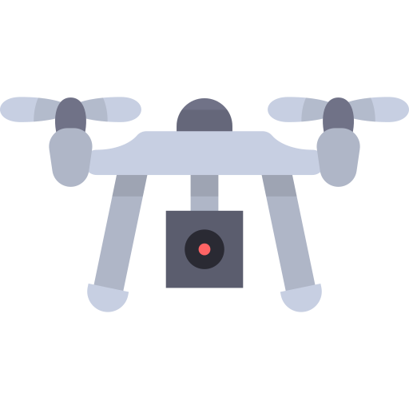
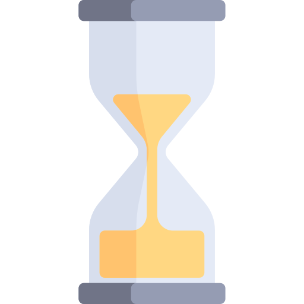
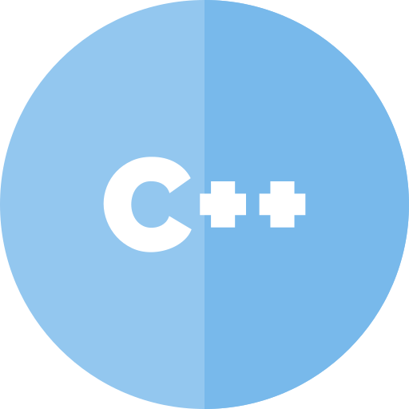
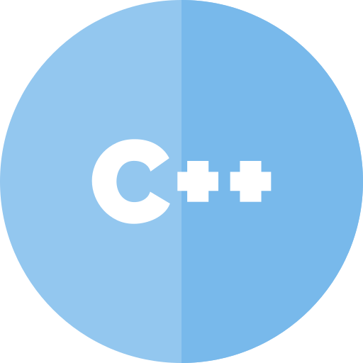

The ROS 2 Vision
For Advancing the Future
of Robotics Development
Sep. 21st 2017
Dirk Thomas, Mikael Arguedas
ROSCon 2017, Vancouver, Canada
"Unboxing"


Getting Started
Moving Outdoor

Quality of Service
Extend Capabilities: Hardware
Extend Capabilities: Software
Recap #1
 Multi-OS support: Linux, Mac OS, Windows
Multi-OS support: Linux, Mac OS, Windows
-  Binary packages for Mac OS and Windows
-
- Different client libraries share common implementation
-
- Quality of Service: variety of configuration options
-
- Hardware with "native" communication interface
(no need for separate protocols and driver packages)
-
- Event based notifications (rather than need for polling)
- Remapping of topics at runtime
-
Undeterministic Startup
Lifecycle State Machine
Deterministic Startup
Multi Robot
- Distributed discovery useful for on-demand robot-to-robot comm.
- All current ROS middleware implementations support it
- As long as all robots use the same comm. protocol
they can communicate (independent of the vendor)
-
- Quality of Service settings to tailor the comm. for the specific scenario
- (see eProsima's talk @ 11:35)
-
- Dynamic remapping of topics enables various different approaches, e.g.:
- Flip namespaced robot spec. topics to be "global"
- Subscribe to a specific topic from a group of robots
/**/pose or /floor2/*/pose
Adding a Custom Sensor
Flight Controller Internals
Recap #2
- Lifecycle nodes
- Basic Python-based launch files
- Launch utilizing lifecycle state machine
-
- Dual-home bridge to exchange msgs / srvs between ROS 1 and ROS 2
- More configuration options
-
- Multi robot benefiting from the communication protocol:
distributed discovery, configurable QoS, dynamic remapping
-
- "Native" communication protocol with micro controllers (DDS-XRCE)
-
- Proof of concept for real time support using custom allocators
- No usage of real time kernel yet, no continuous testing
-
Process Layout Decision
Fault Tolerance and Fallback Behaviors
Unsecure System

Securing the System

Validation and Certification
- Use certified hardware components (which talks DDS)
- Use certified DDS implementation
- Use certified / validated software components
-
- Select only the subsystems of ROS 2 which are required for the use case
- Build your own subsystem on top
-
- → Reduced effort to validate the custom application by
- Using certified subsystem
- Reducing footprint as much as possible
Recap #3
- Choose process layout at deploy time
- Support from launch to easily configure this
-
- Event based system providing the infrastructure for fault detection,
no tooling yet
-
- Security following the DDS-Security standard
-
- None of the ROS 2 development is certified
- But it can interoperate with certified implementations
-
Questions...
For more information go to:
ros2.org

 
